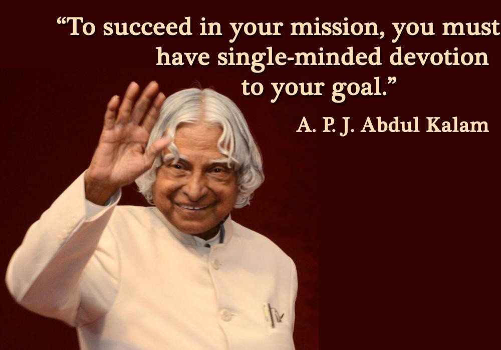

“Excellence is a continuous process and not an accident.”- A.P.J. Abdul Kalam These words come from the man who knew excellence at close quarters, Late A.P.J Abdul Kalam. The 11th President of India was a scientist turned politician who left a mark not just in Indian but also in the world history. He has been honored with the Bharat Ratna, the highest civilian honor an Indian can receive. He was elected the President unanimously by Bharatiya Janata Party and opposition Indian National Congress in the year 2002. He served his term from 2002 to 2007 and then returned to his sacred life of education and science.
Abdul Kalam had to struggle a lot to reach the success he has achieved in his career. He has been a live manifestation of the strength he describes in this quote. Avul Pakir Jainulabdeen Abdul Kalam or A.P.J Abdul Kalam was born on 15 October, 1931 to a humble Tamil Muslim family. He had to sell newspapers his his childhood in order to manage the finances of the family. He was an average student in school but his keen interest in studies and his hard work are what helped him achieve success in his career.
Kalam graduated in Physics from Tiruchirapalli’s St Joseph’s College, which was affiliated with the University of Madras, in 1954. In the year 1955, Kalam pursued Aerospace Engineering from Madras Institute of Technology. Kalam wanted to become a fighter pilot for IAF but missed the opportunity as there were only eight positions and Kalam qualified ninth.

Dr Kalam has been honored with the Padma Bhushan in 1981, Padma Vibhushan in 1990 and the Bharat Ratna in 1997. He has also been honored with National Space Society’s Von Braun Award in the year 2013. He has received honorary doctorates from 40 universities around the world. After his death, the Tamil Nadu Government has declared 15 October as Youth Renaissance Day. The United Nations Organisation has declared 15 October, Dr Kalam’s birthday, as World Student’s Day.
Motivational Speech of APJ Abdul Kalam to become UNIQUE YOU Today, on this beautiful day, thinking about Swami Vivekananda, I am happy to see young people. I want to share a thought with all the youth present here, i have met, so far, 11 million youth like you. I have seen their hopes, experienced their pain, walked with their aspirations and heard through their despair. From all this I learned something about youth.
APJ Abdul Kalam sir was such a visionary who's optimistic and powerful views are cherished all over the world. His oratorical skills made him the who he is at present. The youth was is and will be immensely influenced by his speeches because he never used such words which demoralized the person from inside.